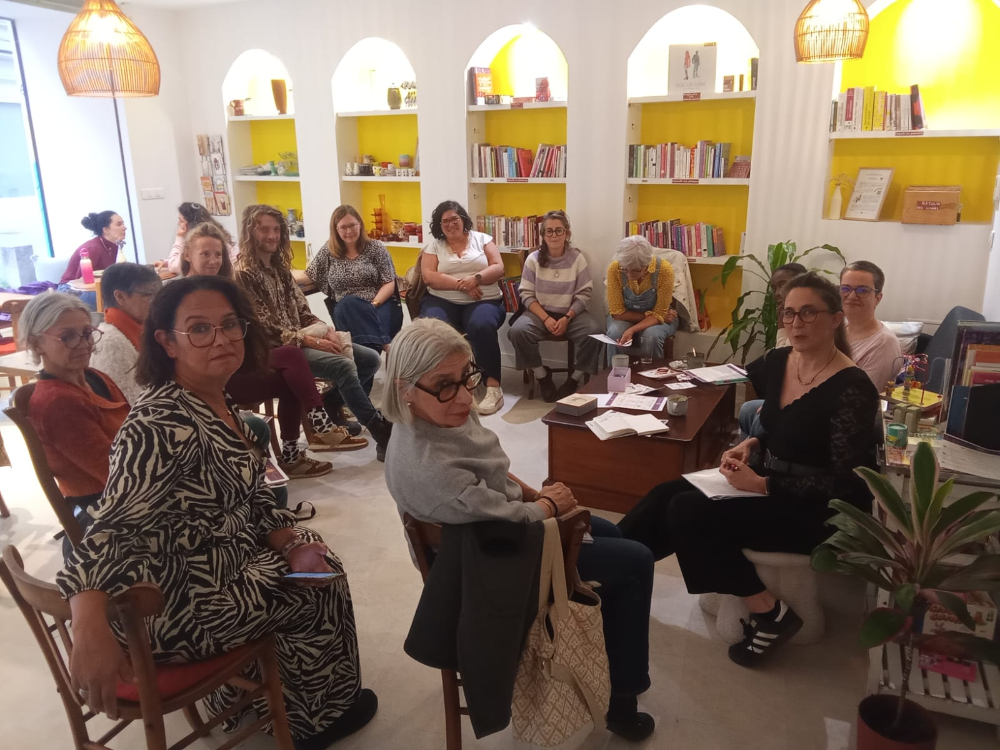
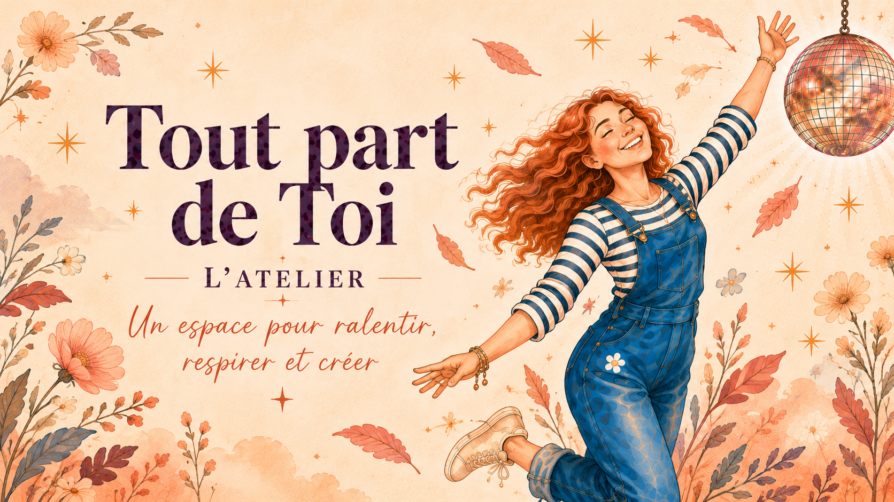

Ralentir, écouter son énergie, choisir ce que l’on nourrit.
J’ai mis du temps à vous écrire ce mois-ci.
Pas par manque d’envie.
Mais parce que beaucoup d’entre vous sont arrivé·es au cabinet ces dernières semaines.
De nouveaux visages, de nouvelles histoires, de nouvelles manières d’être au monde.
Et je mesure à chaque fois l’honneur et le privilège que représente le fait de vous accompagner.
J’aime particulièrement ce temps du début.
Celui où j’apprends à vous connaître. Où j’écoute votre rythme, vos mots, vos silences, ce qui vous fait rire, ce qui vous inquiète, ce qui revient souvent.
Et où, peu à peu, je crée une place pour vous à l’intérieur de moi.
Une place singulière. Pas interchangeable.
C’est aussi cela, pour moi, la relation thérapeutique.

Et puis, samedi 10 octobre, vous étiez 12 au Café Psycho.
12 personnes réunies pour parler de l’énergie d’automne, de fatigue, de rythme, de ralentissement et de ce décalage que beaucoup ressentent sans toujours savoir le nommer.
En septembre et en octobre, le temps social repart très fort.
La rentrée. Les projets. Les inscriptions. Les rendez-vous. Les objectifs. Les agendas qui se remplissent.
Comme si l’année commençait vraiment là.
Mais biologiquement, quelque chose d’autre se passe.
Les jours raccourcissent. La lumière diminue. Les températures baissent. Le corps reçoit progressivement des signaux qui l’invitent davantage au repos, au recentrage, à l’économie d’énergie.
Chez beaucoup de personnes, cela peut se traduire par une fatigue plus présente, un besoin de sommeil accru, plus de difficulté à se mettre en route, une envie de rester davantage chez soi, une plus grande sensibilité émotionnelle ou simplement moins d’élan pour faire autant qu’en juin.
Et ce n’est pas forcément un problème à corriger.
C’est peut-être parfois simplement un rythme à entendre.
Nous avons tendance à penser que notre énergie devrait rester stable toute l’année. Mais le vivant ne fonctionne pas comme ça.
Il alterne. Il pousse. Il fleurit. Il produit. Puis il ralentit. Il trie. Il laisse tomber. Il conserve.
Prenez une feuille et tracez trois colonnes.
Ne réfléchissez pas trop. Notez ce qui vient.
Puis regardez votre feuille et demandez-vous :
Si je n’avais pas la même quantité d’énergie qu’au printemps, où ai-je vraiment envie de la mettre ?
L’automne n’est peut-être pas seulement une saison où l’on perd de la lumière.
C’est aussi une période où l’on peut apprendre à choisir ce que l’on garde.
Et parfois, ralentir ne veut pas dire renoncer.
Cela veut simplement dire mettre son énergie là où elle compte vraiment.

Et cette question de l’énergie, du corps, du rythme et du vivant sera justement au cœur de Tout part de Toi — L’atelier.
Le premier week-end aura lieu les 31 octobre & 1er novembre 2026 à Où cours-tu ? — Lyon 9e, métro Valmy.
Et il est encore possible de rejoindre le groupe.
Un week-end par mois jusqu’en juin pour sortir un peu du rythme habituel et retrouver le corps, le mouvement, la respiration, la créativité, le jeu, l’écriture, la voix, la relation — et surtout un peu plus de vivant.
Vous pouvez rejoindre l’atelier seul·e, avec votre partenaire ou avec une amie.
Venir à deux ne signifie pas tout faire ensemble. Chacun·e garde son espace, son rythme, ses limites et ses expériences.
Mais partager ce chemin peut permettre de se découvrir autrement, de retrouver du jeu et de créer de nouveaux souvenirs.
Sortir de l’épuisement ne consiste pas seulement à « se reposer ».
Il faut parfois réapprendre à sentir, écouter ses limites, retrouver du plaisir, remettre du mouvement là où tout s’est figé et créer sans objectif de performance.
Cet espace peut aussi être précieux en prévention, notamment quand on est entrepreneur·e, indépendant·e, aidant·e ou habitué·e à beaucoup porter pour les autres.
Vous vous demandez simplement : « Est-ce que cet atelier pourrait être pour moi ? »
Écrivez-moi. En parler ensemble ne vous engage évidemment à rien.
M’écrire pour en parlerLes accompagnements individuels et de couple continuent au cabinet de Valmy et en visio.
Et ce mois-ci, j’ai simplement envie de vous dire merci.
Merci pour votre confiance. Merci de venir déposer des choses parfois très fragiles. Merci de me permettre d’entrer un peu dans vos histoires.
C’est un métier qui demande beaucoup de présence. Mais c’est aussi un métier qui me touche profondément.
Vous avez participé à un Café Psycho, un atelier, ou été accompagné·e au cabinet ?
Si vous en avez l’élan, laisser quelques mots sur Google aide d’autres personnes à se faire une idée plus concrète de mon travail et, parfois, à oser franchir le pas.
Laisser un avis GoogleJe ne vais pas vous souhaiter davantage d’énergie.
Je vais plutôt vous souhaiter de pouvoir entendre celle que vous avez.
De savoir où elle veut aller. De reconnaître quand elle baisse. Et de ne pas toujours prendre le ralentissement pour un échec.
Peut-être que l’automne ne nous demande pas de devenir moins vivant·es.
Peut-être qu’il nous invite simplement à vivre autrement.